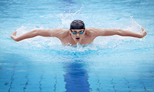

Renang
Berenang adalah gerakan sewaktu bergerak di air. Berenang biasanya dilakukan tanpa perlengkapan buatan. Kegiatan ini dapat dimanfaatkan untuk rekreasi dan olahraga. Berenang dipakai sewaktu bergerak dari satu tempat ke tempat lainnya di air, mencari ikan, mandi, atau melakukan olahraga air. Berenang sangat berguna sebagai alat pendidikan, sebagai rekreasi yang sehat, menanamkan keberanian, percaya diri, dan sebagai terapi yang terkadang dianjurkan oleh dokter, serta untuk keselamatan diri atau orang lain. Berenang untuk keperluan rekreasi dan kompetisi dilakukan di kolam renang. Manusia juga berenang di sungai, danau, dan laut sebagai bentuk rekreasi. Olahraga renang membuat tubuh sehat karena hampir semua otot tubuh dipakai sewaktu berenang. Standar ukuran kolarn renang lebar jalur kolam 2,25 m, jangkauan tolakan berenang ± 1,50 m, panjang tubuh dan empat tolakan renang adalah 8 m, kedalaman air setinggi dagu dari ibu-ibu, bukan anak-anak. Kedalaman bak kolam berbeda dengan kedalaman air